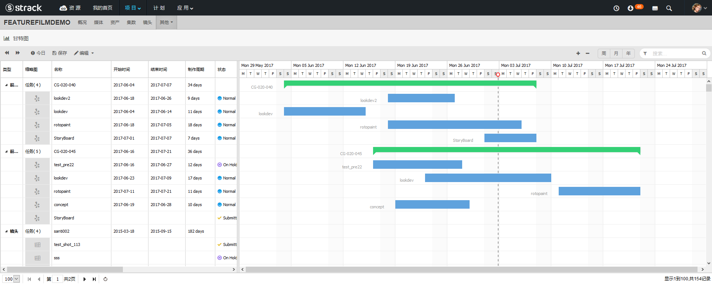
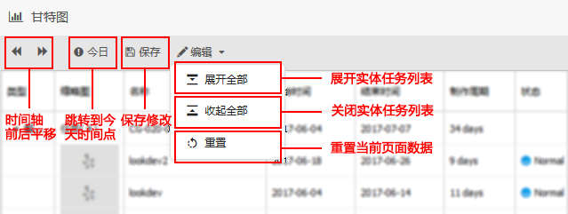
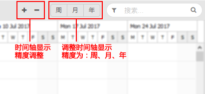
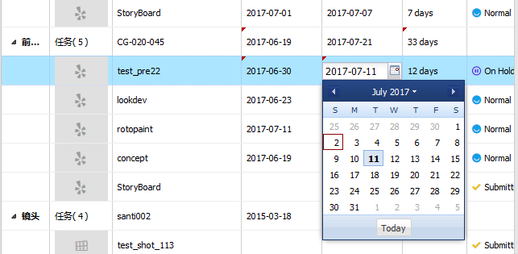
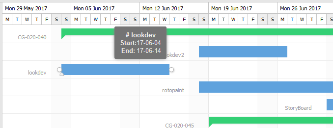
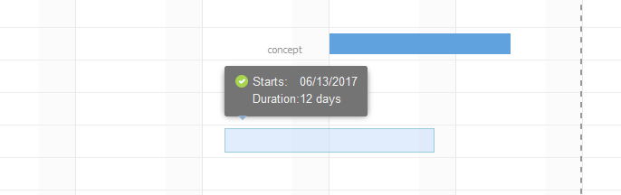
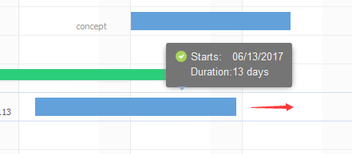

模块简介
甘特图其通过条状图来显示当前项目的前期制作任务、资产任务、镜头任务进展的内在关系随着时间进展的情况。
页面预览

工具栏操作
1. 左侧编辑按钮说明

2. 右侧编辑按钮说明
搜索为通用模块这里就不介绍了，详情请看过滤模块介绍。

表格页面操作
1. 双击左侧表格单元格编辑
开始时间、结束时间、制作周期为可编辑单元格，三者数据互相有影响。编辑完毕左上方会标记为红色小三角表示当前数据还未保存。
有两种触发保存方法： 1. 点击左上方保存按钮进行批量保存。 2. 拖拽右侧时间轴内任意项触发保存操作。

2. 点击表格数据缩略图
可以快速跳转到当前任务详情页面。
3. 点击表格数据行
如果当前行有起始时间数据，则会快速在右侧时间线上定位到当前时间点显示。
时间线任务项操作
1. 把鼠标移入到时间线上任务项
会快速显示当前任务起始时间基本信息。

2. 创建任务项制作时间范围
对于还未设置时间的任务项，可以在当前这行时间线上直接拖拽鼠标选择一个时间范围，停止拖拽释放鼠标操作则会自动保存。

3. 修改任务项制作时间范围
两种方法： 1. 整体拖拽任务项改变其时间范围，释放鼠标操作则会自动保存。 2. 拖拽任务项两边手柄调整任务项一头时间范围，释放鼠标操作则会自动保存。
